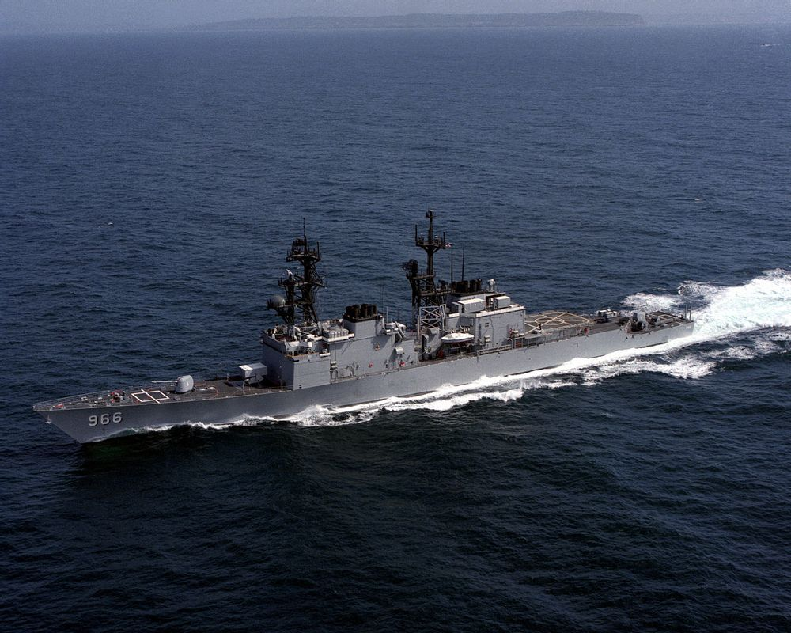
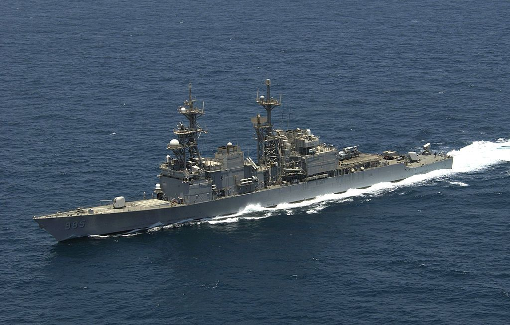

|  |
| DD-966 휴윗 VLS 개수이전 |
|  |
| DD-985 쿠싱 VLS 개수이후 |
1. 개요
2. 제원
3. 개발배경
| 명칭 | 스프루언스급 구축함 (Spruance-class destroyer) |
||
| 운용국 | 미국-미합중국 해군 | ||
| 건조 업체 | Ingalls Shipbuilding(노스롭 그루먼 계열사) | ||
| 취역 역사 | 1975-2005(실전 배치 기준) | ||
| 취역/현역/퇴역 | 31척/0척[1]/31척 | ||
| 함종 | 구축함(DD) | ||
| 이전급 | 찰스 F. 애덤스급 구축함 | ||
| 다음급 | 키드급 구축함&타이콘데로가급 순양함(파생형) | ||
| 알레이 버크급 구축함 | |||
| 만재배수량 | 8,040톤 | ||
| 길이 | 172m | ||
| 폭 | 16.8m | ||
| 흘수선 | 8.8m | ||
| 동력 | 방식 | COGAG | |
| 기관 | 제너럴 일렉트릭 LM2500 가스터빈 ( 21,500마력, 16,000 kW) ×4 |
||
| 추진 | 가변피치 프로펠러 x2축 | ||
| 속도 | 32.5노트 | ||
| 항속거리 | 20노트 순항시 11,000km | ||
| 승조원 | 334명 | ||
| 교전 능력 | 동시교전 | 2개 표적 | |
| 최대 탐지거리 | 460km | ||
| 무기통제체계 | 대공체계 | Mk.91 FCS | |
| 함포체계 | Mk.86 GFCS | ||
| 대잠체계 | AN/SQQ-89 ASWCS, LAMPS | ||
| 레이더 | |||
| 대공탐색 | AN/SPS-40 | ||
| 사격통제 | AN/SPG-60, AN/SPS-65, AN/SPQ-9 | ||
| 대공보조 | Mk.23 TAS | ||
| 대수상 | AN/SPS-55 | ||
| 소나 | |||
| 고정 | AN/SQS-53 | ||
| 예인 | AN/SQR-19 | ||
| 기만체계 | |||
| 채프/플레어 미사일 기만용 |
AN/SLQ-49, Mk.36 SRBOC, AN/WLR 1(DD-971, 975 만 탑재) | ||
| 디코이 어뢰 기만용 |
AN/SLQ-25 | ||
| ECM 전자전 체계 |
AN/SLQ-32 | ||
| 무장 | |||
| 미사일 런처/VLS | 미개수 | Mk.41 VLS ×61셀 | |